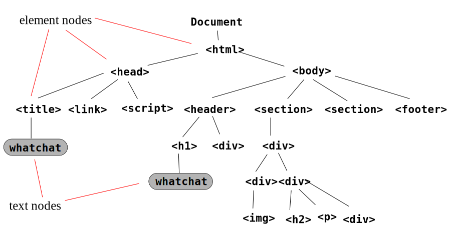
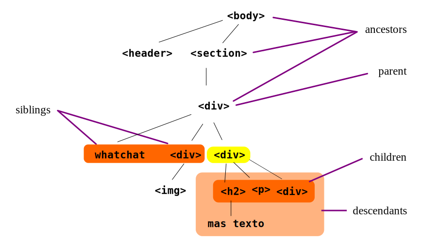
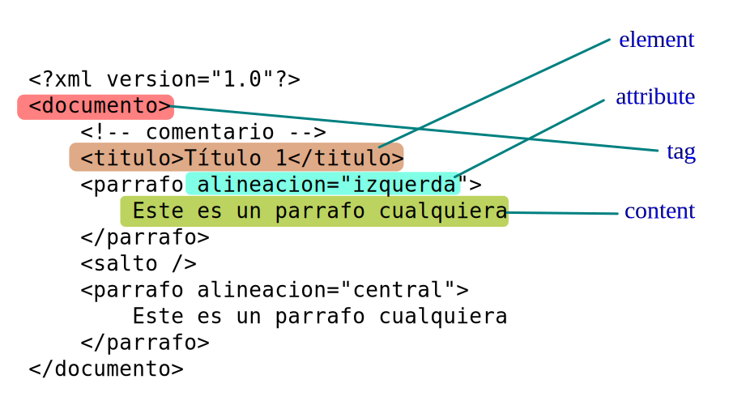
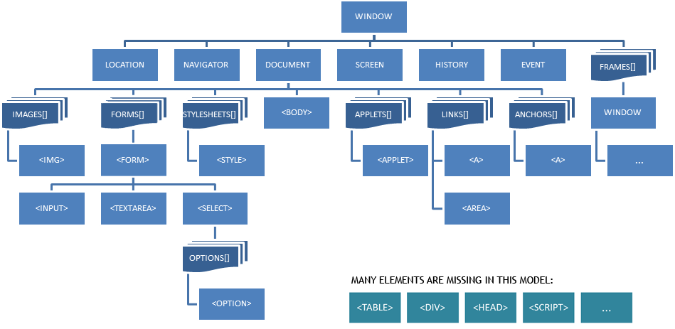

Learn Javascript
Instructor
Vladimir Cespedes
@vladwelt
Dia 0
Objetivos
- Generalidades
- Diseño web
- Estructura del lenguaje
- Variables y tipos
GENERALIDADES
Que es Javascript(JS)
- JavaScript es un lenguaje de programación interpretado, dialecto del estándar ECMAScript.
- JavaScript se utiliza principalmente en el lado del cliente (client-side).
- JavaScript nos permite desarrollar paginas web dinamicas.
Javascript se define como orientado a objetos, basado en prototipos, imperativo, débilmente tipado y dinámico. https://es.wikipedia.org/wiki/JavaScript
JavaScript es un lenguaje del lado del cliente

DISEÑO WEB
DISEÑO WEB
- Contenido
- Presentacion
- Comportamiento
HTML
CSS
JS
Interpretado en una pagina web
Interpretado en una pagina web
// miscript.js
//alert('Hello World!');
A Desarrollar
Ejecucion del codigo
| Interpretado en la pagina web |
|---|
| Interpretado en la consola |
ESTRUCTURA DEL LENGUAJE
| Comentarios |
|---|
| Literales |
| Identificadores |
| Punto y coma (;) |
Comentarios
Dos formas de comentar
// Comentario de una linea
/* Comentario
de
muchas
lineas
*/
Literales
| Números enteros: | 192 |
|---|---|
| Números flotantes: | 1.4 |
| Cadenas de texto: | "Hola mundo", 'Hola mundo' |
| Valores lógicos: | true, false |
| Expresiones regulares | /[A-Za-z]/ |
| Valor nulo: | null |
| Valor indefinido: | undefined |
Identificadores
Los identificadores en javascript comienzan con una letra, una barra baja (_), o un caracter de dolar ($); seguidos por letras, números, barras bajas, y caracteres de dolar, por ejemplo:
var nombre;
var _nombre;
var $nombre;
Punto y coma (;)
Es posible el uso del caracter (;) para la separación de sentencias, sin embargo, esta tambien puede omitirse si estos están en diferentes lineas
Los interpretes de JavaScript, tratan a los fines de linea como final de una sentencia, si y solo si, la siguiente sentencia no puede interpretarse como continuación de la anterior.
Pueden verse varios criterios para tomar una decisión.
VARIABLES
VARIABLES
Una variable es un contenedor para un valor.
El nombre que se refiere a una variable es llamada identificador
Palabras Reservadas
Algunas palabras reservadas que no podemos usar:
null true false break do instanceof typeof
case else new var catch finally return void
continue for switch while debugger function
this with default if throw delete in try
class enum extends super const export import
implements let private public yield
interface package protected static
No es necesario memorizar estas palabras, cuando las usemos incorrectamente, el programa generara SyntaxError exception.
VALORES Y TIPOS
VALORES
Un valor representa el dato mas basico que nosotros podemos dar con un valor.
TIPO
Un tipo es un conjunto de valores de datos y hay exactamente 6 tipos.
Hay 5 tipos primitivos(non-Object)
| Number | .33 , -3.14, 011, 7e-2, -Infinity, NaN |
|---|---|
| Boolean | true, false |
| String | "", "Hello world!", "\n", "\"", 'w Single Quotes' |
| Null | null |
| Undefined | undefined |
Cualquier valor de esta tabla, es llamado valor primitivo.
Y hay 1, el tipo objeto
var miObjeto = {
atributo1 : "atributo 1",
atributo2 : "atributo 2",
}
var x1 = new Object(); // A new Object object
var x2 = new String(); // A new String object
var x3 = new Number(); // A new Number object
var x4 = new Boolean() // A new Boolean object
var x5 = new Array(); // A new Array object
var x6 = new RegExp(); // A new RegExp object
var x7 = new Function(); // A new Function object
var x8 = new Date(); // A new Date object
Any value of this type is a reference to some “object”; sometimes we would simply call such value an object
DIA 1
Objetivos
- Manipulacion de Datos
- Condicionales
- Iteradores
- Objetos
- Retos
Manipulacion de datos
VAR
// var - palabra clave
var numero = 3;
var cadena = "mi cadena."
var visible = true;
var desconocido; // Undefined
var conocido = null;
var instructor = {
nombre : "Vladimir",
apellido : "Cespedes",
edad : "Desconocida",
}
Palabra clave para la declaración de una variable.
Number
NaN
El valor NaN es un numero que es el resultado de una operacion que no puede producir un resultado normal. NaN no es igual a cualquier valor, incluyendo el mismo. Podemos detectar NaN con la funcion isNaN(Number).
Infinity
EL valor Infinity representa todos los valores mas grandes que 1.79769313486231570e+308.
Math
Math es el objeto que concentra multiples constantes y funciones matematicas.
Mas referencia a la documentacion de Math.
Cadenas de Texto
Se utilizan para almacenar caracteres, palabras y/o frases de texto. Para asignar el valor a la variable, se encierra el valor entre comillas dobles o simples, para delimitar su comienzo y su final:
// Ejemplo de cadenas de texto
var mensaje = "Este curso esta bueno!";
var mensaje_nuevo = 'Ahora usando comillas simples';
var texto1 = "Una frase con 'comillas simples' dentro";
var texto2 = 'Una frase con "comillas dobles" dentro';
Escapadores
Existen otros caracteres que son difíciles de incluir en una variable de texto (tabulador, ENTER, etc.) Para resolver estos problemas, JavaScript define un mecanismo para incluir de forma sencilla caracteres especiales y problemáticos dentro de una cadena de texto.
| \O | The NULL character |
|---|---|
| \b | Backspace |
| \t | Horizontal tab |
| \n | Newline |
| \v | Vertical tab |
| \f | Form feed |
| \r | Carriage return |
| \" | Double quote |
| \' | Apostrophe or single quote |
| \\ | Backslash |
| \x[XX] | The Latin-1 |
| \u[XXXX] | The Unicode character |
Manipulacion de Cadenas
var s = "hello, world"
s.charAt(0) // => "h"
s.charAt(s.length-1) // => "d"
s.substring(1,4) // => "ell"
s.slice(1,4) // => "ell"
s.slice(-3) // => "rld"
s.indexOf("l") // => 2
s.lastIndexOf("l") // => 10
s.indexOf("l", 3) // => 3
s.split(", ") // => ["hello", "world"]
s.replace("h", "H") // => "Hello, world"
s.toUpperCase() // => "HELLO, WORLD"
Manipulacion de valores logicos
True y False
Son tambien falsos los siguientes valores
- Undefined
- 0
- NaN
- null
- -0
- "" or ''
Valor nulo y valor indefinido
Representan la ausencia de un valor en una variable o en el retorno de una funcion.
(nombre es undefined)
Programador: ¿qué es nombre?
Javascript: ¿nombre? ¿qué es un nombre? No sé de qué hablas, ni siquiera has mencionado nombre antes. ¿No te referirás a otro lenguaje?
(nombre = null)
Programador: ¿qué es nombre?
Javascript: no lo sé
Una de las mejores respuestas en Stackoverflow
Condicionales
| if |
|---|
| else if |
| switch |
if
if (expresion) {
sentencias
}
if (expresion) {
sentencias
} else {
sentencias
}
else if
if(expresion) {
sentencias
} else if(otra expresion) {
sentencias
} else {
sentencias
}
switch
switch(expresion) {
case 1:
sentencias
break
case n:
sentencias
break
default:
sentencias
}
A Desarrollar
Ejercicios
| Que pida un número y diga si es par o impar. |
|---|
| Que pida un número del 1 al 7 y diga el día de la semana correspondiente. |
| Que pida un número y diga si es positivo y negativo. |
Iteradores
| while |
| do while |
| for |
| for in |
while
while(expresion){
sentencias
}
do while
do {
sentencias
while(expresion)
for
for(inicializacion;evaluador;incrementador){
sentencias
}
for in
for(variable in coleccion){
sentencias
}
A Desarrollar
Ejercicios
| Que muestre los números del 1 al 100. |
|---|
| Que muestre los números pares que haya del 1 al 100. |
| Que imprima la suma de todos los números que van del 1 a un numero determinado. |
| Que pida dos números y sume todos los números que van desde el primero al segundo. Se debe controlar que los valores son correctos. |
Objetos
Un objeto es un coleccion de propiedades
Una propiedad tiene un nombre y un valor
Objecto
El nombre de una propiedad es llamado clave, entoces un objeto puede ser considerado como una coleccion de clave-valor.
Objeto
Un objeto en JavaScript puede ser definido de 3 maneras:
| Definicion literal. |
| Instanciación de clases. |
| Creación a partir de un prototipo. |
Definición literal
var pais = {
nombre : "Bolivia",
departamentos : ["Cochabamba", "La paz", "Santa Cruz"],
}
Instanciación de clases
var primerObjeto =new Object();
var cadena = new String('qwerty');
var numero = new Number(2);
var booleano = new Boolean();
var secuencia = new Array();
Prototipos
Un prototipo un objeto asociado al objeto que se esta definiendo, y del cual va a heredar propiedades.
Es establecido cuando el objeto es creado.
Puede accederse a el desde la variable prototype.
Prototipos
Se usa para agregar funciones a una definición incluso despues de haber declarado alguna instancia.
a=new String('javascript');
String.prototype.saludar=function(){
return 'hola Javascript!'
}
console.log(a.saludar());
Esto no se considera una practica recomendada. Para mas información Stackoverflow.
Prototipos como herencia
Tambien puede servir para realizar herencia entre objetos.
function A(){
this.a=100
this.x=function(){
return this.a
}}
function B(){this.b=100}
B.prototype=new A()
b=new B()
console.log(b.x())
Object.create
Construye un nuevo objeto a partir de un prototipo establecido.
function A(){
this.f=function(){return 'asdf'}
}
a=new A()
b=Object.create(a)
console.log(b.f())
Referencia
Los objetos son pasados por referencia, nunca son copiados
var persona = {
nickname : "Vlady",
}
var x = persona;
x.nickname = 'juanito';
var apodo = persona.nickname;
console.log(apodo);
// nickname es 'juanito' porque x y persona
// son referencias al mismo objeto.
var a = {}, b = {}, c = {};
// a, b y c son referenciados a
// diferentes objetos vacios.
a = b = c = {};
// a, b y c son refenciados a el
// mismo objeto vacio.
Retos
- Siempre 7
- Que calcule la suma de los cuadrados de los 100 primeros números.
- Que escriba los primeros 25 dígitos de la sucesión de Fibonacci.
DIA 2
Objetivos
- Funciones
- Clases
- JSON
- Retos
Funciones
Lo mejor de JavaScript es la implementación de las funciones.
Una función encierra un conjunto de sentencias.
Las funciones son la unidad modular fundamental de JavaScript. Se utilizan para la reutilización de código, ocultación de información, y la composición.
Las funciones se utilizan para especificar el comportamiento de los objetos. En general, el arte de la programación es la factorización de un conjunto de requisitos en un conjunto de funciones y estructuras de datos.
Funciones
Las funciones se declaran con la palabra reservada function.

Asignación
Una función puede ser asignada a una variable.
var f = function(x) {
console.log(x)
}
f(10);
Autoejecutable
Como una función puede ser asignada a una variable, es posible que una función reciba otras funciones como parte de sus parametros.
function f(x,g){
return g(x)
}
var a = f(2,function(x){return x*3})
console.log(a) // 6
Autoinvocación
Ademas una función puede definirse de forma anonima, ademas de ejecutarse en la misma sentencia de su definición.
var a=(function(x,y){
return x+y
}(1,2))
console.log(a) // 3
Funciones internas
Otra caracteristica importante sobre las funciones en JavaScript, es que puede definirse una función dentro de otra función.
function a(){
var x=10
function b(){
return x+1
}
return b()
}
console.log(a())
TOOLS
Date
Date es el objeto utilizado para la representación de fechas.
Internamente, esta representación es un número que representa una cuenta de los milisegundos transcurridos desde la fecha: 1 de enero de 1970.
Pueden verse mas sobre los sistema de tiempo en: System Time en Wikipedia.
A Desarrollar
Ejercicios
| Operaciones matematicas |
|---|
| Invertir un String |
| Que escriba la sucesión de Fibonacci, hasta un numero n, utilizar recursividad. |
| Que detecte si un número es primo, utilizar recursividad. |
Varargs
Al igual que en el lenguaje de programación Java, una función puede ser invocada con mas parametros de los que han sido definidos, o inclusive con menos.
Todas los parametros que han sido enviados a una función pueden ser accedidos a esta por el arreglo objeto "arguments".
function a(){
console.log(arguments)
}
a(1,2,3,4,5,6)
Hoisting
Las variables en JavaScript, tienen ambito de función, esto significa que todas las variables declaradas en una función son visibles a travez del cuerpo de la función. Esto significa que las variables son incluso visibles antes de ser declaradas.
Referencias a adequatelygood
Hoisting
Ejemplos:
var a='asdf';
(function b(){
console.log(a)
})() // asdf
var a='asdf';
(function b(){
console.log(a)
var a='qwer'
})() // undefined
scope
Ambito(scope) de aplicación en un lenguaje de programación controla la visibilidad y la vida útil de las variables y parámetros. este es un servicio importante para el programador, ya que reduce las colisiones de nombres y proporciona gestión automática de memoria:
scope
var funcion1 = function() {
var a = 3, b = 5;
var funcion2 = function() {
var b = 7, c = 11;
// En este punto, a es 3, b es 7, y c e 11
a += b + c;
// En este punto, a es 21, b es 7, y c es 11
};
// En este punto, a es 3, b es 5, y c no esta definido
funcion2();
// En este punto, a es 21, b es 5
};
Closure
Las buenas noticias sobre el alcance es que las funciones internas tienen acceso a los parámetros y variables de las funciones que están definidas dentro (con la excepción de this y arguments).
Closure
Ejemplo
var myObjeto = function () {
var valor = 0;
return {
incrementar: function (inc) {
valor += typeof inc === 'number' ? inc : 1;
},
getValue: function () {
return valor;
}
};
}();
Clases
Una clase en JavaScript es una colección de objetos que heredan propiedades de un mismo prototipo.
function A(){
this.a=10
this.b=11
}
a=new A()
Tools
instanceof
Verifica si un objeto es instancia de algún prototipo.
typeof
Retorna una cadena indicando el tipo de dato que tiene una variable.
A Desarrollar
Ejercicios
| Crear un objeto persona, que muetre su nombre completo. |
|---|
| Editar el objeto persona, y verificar que su carnet de identidad sea valido. |
| Crear un objeto empresa, que pueda agregar empleados, calcular la media de salarios. |
| Crear un objeto biblioteca, que pueda agregar libros, eliminar libros, prestar libros,saber el estado del libro. |
JSON
JSON
JSON, acrónimo de JavaScript Object Notation, es un formato de texto ligero para el intercambio de datos. JSON es un subconjunto de la notación literal de objetos de JavaScript aunque hoy, debido a su amplia adopción como alternativa a XML, se considera un formato de lenguaje independiente.
Referencia: JSON en Wikipedia
JSON
Ejemplo
{"menu": {
"id": "file",
"value": "File",
"popup": {
"menuitem": [
{"value": "New", "onclick": "CreateNew()"},
{"value": "Open", "onclick": "Open()"},
{"value": "Close", "onclick": "Close()"}
]
}
}
}
Transformación
Existen dos métodos para la transformación entre JSON y Objetos de JavaScript.
JSON.stringify OBJECT -> JSON
Retorna una cadena en formato JSON correspondiente a un valor especificado.
JSON.parse JSON -> OBJETO
Interpreta una cadena en formato JSON a su objeto correspondiente.
Retos
- Crear objeto persona, ingresar la fecha y calcular la edad.
- Un banco tiene n clientes que pueden hacer depósitos y extracciones. También el banco requiere que al final del día calcule la cantidad de dinero que hay depositada.
- Crear un objeto empresa y que pueda agregar empleados con diferentes cargos jerarquicos y que pueda definir su salario segun al cargo.
DIA 3
Objetivos
- Window
- DOM
- Retos
Window
The objeto Window es el mas alto nivel de objetos JavaScript que corresponden a la ventana del navegador.
Mas Referencia Window Object
API Window
| location | Objeto que representa la url actual. |
|---|---|
| history | back - forward - go |
| navigator | Provee información relacionada al navegador. |
| screen | Provee información relacionada a la resolución de pantalla. |
Cuadros de dialogo
// alerta
alert(mensaje)
// ventana de confirmacion
res=confirm(mensaje)
// ventana de dialogo
res=prompt(mensaje,valor)
Timers
Son funciones que son invocadas despues de un tiempo determinado.
| setTimeout() | Planifica la invocación despues de un tiempo determinado. |
|---|---|
| setInterval() | Planifica la invocación despues de un intervalo. |
| clearTimeout() y clearInterval() | Limpia tareas puestas en el planificador. |
Ejemplos
setTimeout(function(){
alert('asdf')
},8000);
setInterval(function(){
alert('asdf')
},3000);
DOM
DOM (Document Object Model), es una interfaz de programación para documentos en HTML y XML.
DOM
Provee una representación estructurada del documento (en forma de una estrucura de arbol).
DOM
Ademas define una manera para que la estructura pueda ser accedida, ademas de poder modificar su estilo o contenido.
DOM
DOM permite un acceso a la estructura de una página HTML mediante el mapeo de los elementos de esta página en un árbol de nodos. Cada elemento se convierte en un nodo y cada porción de texto en un nodo de texto.
API DOM
La manipulación del contenido en el navegador depende de un conjunto de funciones y atributos que son provistos por el objeto document, que es de tipo HTMLDocument.
Referencia (Document)Referencia (Element)
Representación de un documento HTML
Notación de navegación
Notación de XML
Jerarquia de clases DOM
Selectores
| document.getElementById(id) |
|---|
| document.getElementsByName(name) |
| document.getElementsByTagName(tagname) |
| document.getElementByClassName(classname) |
DIA 4
Objetivos
- Eventos
- AJAX
- Retos
DIA 5
Objetivos
- REST
- SPA